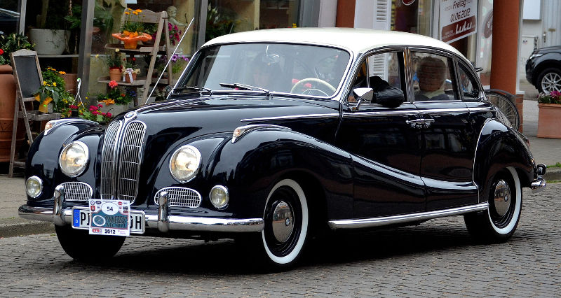
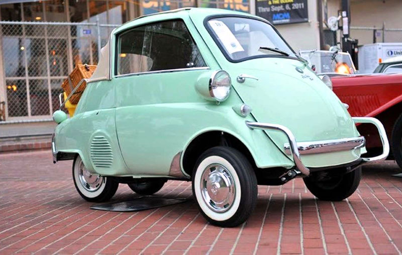
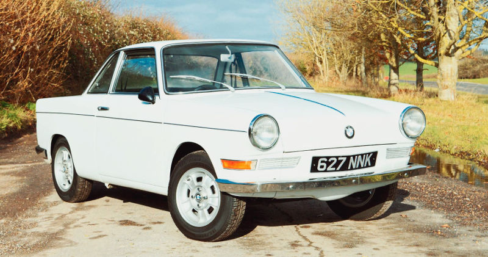
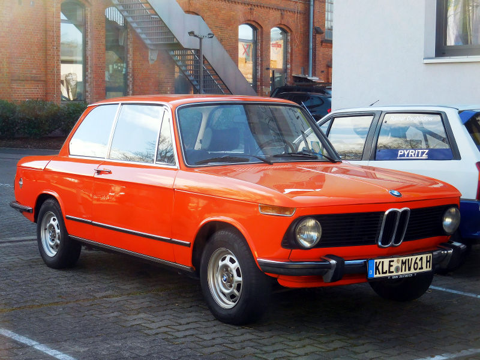

История создания BMW
Сегодня BMW — это современный, достойный и популярный производитель транспортных
средств. Однако история компании БМВ ярко отражает ее путь, пройденный для того, чтобы завоевать доверие
и
уважение своих поклонников.
В настоящее время логотип BMW украшает автомобили, мотоциклы, велосипеды, двигатели самого лучшего
качества.
Оборот компании составляет около 170 миллиардов евро в год, из которых примерно 9 миллиардов составляет
чистая прибыль. Крупные дочерние компании марки специализируются на производстве малолитражек,
автомобилей
класса люкс и электромобилей.
Логотип компании
Территориально главный офис компании находится в Германии, в городе Мюнхен. Производственные мощности расположены как в некоторых городах Германии, так и в других странах. Автомобили БМВ уже много лет составляют успешную конкуренцию продукции Mercedes Benz. Изначально основанная для производства авиационных двигателей, компания прочно вошла в автомобильную промышленность и является одним из флагманов в этой отрасли.

Главный офис компании
Как все начиналось
История создания компании началась с того, что в 1916 году Карл Фридрих Рапп зарегистрировал свою фирму по производству авиационных двигателей. Штаб-квартира будущего лидера автопрома расположилась в Мюнхене, преследуя определенные цели – быть поближе к производственным мощностям по производству самолетов, принадлежащих Густаву Отто – другу и, впоследствии, компаньону Раппа.

Карл Фридрих Рапп, основатель компании
Практически сразу же вновь созданному предприятию улыбнулась удача в виде выгодного
контракта по производству
двигателей для австро-венгерских самолетов. Попутно появилась и трудность – недостаток финансов. Для
решения
последней проблемы компанию удалось расширить, приняв соучредителей, обеспечивших приток денежных
средств. К
сожалению, подобное расширение принесло ряд неудач, повлекших уход основателя компании. Бразды правления
перешли к Францу Джозефу Поппу, благодаря которому с 1918 года история продолжилась уже как компании
БМВ.
В ходе исторических событий того времени, после заключения Версальского мирного договора, производство
самолетов в Германии стало невозможным – оно было запрещено, и история компании повернула в другое русло
–
изготовление тормозных систем для поездов и составов.
Но недолго бренд БМВ имел связь с железнодорожным транспортом — уже в 1923 году под этой маркой был
выпущен
первый мотоцикл. Мотоциклы БМВ сразу же покорили публику своим уровнем – машины были хорошо продуманы,
идеальны для гоночного использования и эффектны внешне.
Произведя отличное впечатление на покупателей мотоциклами, основатели компании не остановились на этом
достижении и в 1928 году были приобретены первые производственные мощности по производству автомобилей.
С
этого времени наряду с мотоциклами получил право на жизнь первый автомобиль.
История автомобилестроения
История автомобилей BMW началась с малолитражек. В то время (а это 20-30 годы XX века) малолитражные автомобили были на пике популярности благодаря своей экономичности по расходу топлива, маневренности и простоте управления. Так, первым разработанным и выпущенным авто БМВ стала Dixi 3/15 PS. В ней было всего 20 лошадиных сил, но ряд ее достоинств дополняла возможность развивать скорость до 80 км/час, четырехцилиндровый двигатель и безукоризненное качество исполнения. Эта модель во многом была скопирована с известной английской марки, поэтому в 1933 году модельный ряд пополнился малолитражной собственной разработки: BMW 303.

BMW 303
Небольшой объем двигателя комфортно сочетался в ней с относительно легким кузовом и
не
плохой мощность в 30
лошадиных сил. Это была уже настоящая представительница бренда, с характерным и в наше время внешним
видом
радиаторной решетки.
В 1936-1937 годах были выпущены BMW 321 и 327 – авто полноценных габаритных размеров, с двухлитровым
двигателем. Красивые, качественные и весьма недешевые. Таким образом, история BMW, как бренда,
гарантирующего высшее качество продукции, была начата в 1927 году и продолжается в наши дни
Послевоенное восстановление
Вынужденный перерыв в автомобилестроении из-за военных действий и их последствий
коснулся и компании БМВ.
Заводы, расположенные в Германии, не имели возможности выпускать авто и мото технику. Разрешение на их
изготовление было получено лишь 1948 году.
Первая, выпущенная после войны BMW 501, оказалась заведомо неудачной. Во-первых, пока длились работы по
ее
разработке и получению разрешений на выпуск, машна уже морально и физически устарела – двигатель не имел
хорошей мощности, а внешность не привлекала покупателей. Во-вторых, цена на 501 была слишком высокой для
послевоенной Германии, а этот факт еще никогда не повышал продажи.
BMW 501
Проглотив неудачу, баварцы взялись за работу, которая принесла крупные плоды. В 1954 году состоялся выпуск модели 502, которая внешне вроде бы и была одной из версий модели 501, но имела явное преимущество – полностью алюминиевый двигатель V8. До этого история двигателей автомобилестроения никогда не знала подобного мотора.
BMW 502
Хорошую прибыль обеспечил массовый выпуск новой модели, изготовленной по итальянской лицензии – BMW Isetta. Это небольшой аппарат с одной дверью и мотоциклетным двигателем. Такие малютки пользовались огромной популярностью; их было собрано более шестнадцати тысяч экземпляров.
Isetta
Трудные времена
В середине 50-х годов двадцатого века история развития компании ознаменовалась разработкой и выпуском двух шикарных моделей BMW: 503 и 507 Roadster. Первую сразу же заметили на мотор-шоу 1955 года благодаря оригинальному строению кузова под названием хартоп.

BMW 507 Roadster
Мощный двигатель и возможность развивать скорость почти до двухсот километров в час
гарантировано сделали эту
модель главным участником шоу во Франкфурте. 507-я БМВ сразу же после выпуска была признана одной из
самых
красивых машин в мире. В ней 3.2-литровый двигатель гармонично сочетался с элегантным внешним видом
кузова,
разработанным графом Альбрехтом Гертцем. Кстати, один из этих родстеров прославился, будучи купленным
Элвисом Пресли.
К сожалению, эти автомобили БМВ хотя и были созданы стильными и качественными, но и имели весьма дорогую
стоимость, что не могло не отразиться на финансовом состоянии компании. Производство мотоциклов
оставалось
на среднем уровне, дорогие седаны покупались мало, а небольшие авто уже не пользовались таким спросом,
как
раньше. История марки BMW снова столкнулась с возможностью преждевременного окончания.
Эпоха возрождения
В декабре 1959 года было объявлено о возможной продаже компании. Кризис помогла разрешить модель 700. Ее украсил кузов Michelotti, а функционал обеспечивался мотором в 700 кубов и мощностью в 30 лошадиных сил. Особенность этой модели – расположение мотора сзади. 700-я отлично была воспринята публикой и заказы посыпались один за другим.
BMW 700
Испытав небольшой подъем, марка уже в 1962 году не только уверенно встала на ноги, но и обрела славу, известную и по сегодняшний день. БМВ 1500 — именно эта модель принесла всемирную известность баварской компании. Заднеприводная, с узнаваемым прогибом кузова и радиаторной решеткой, она была оснащена четырехцилиндровым двигателем – настолько прекрасным во всех отношениях, что даже советские инженеры отдали ему должное, скопировав его для своего творения – Москвича.
BMW 1500
В 60-е годы история BMW стремительно развивала направление седанов и купе с эффектным внешним видом и привлекательными техническими характеристиками. 1962 год стал годом выпуска BMW 3200 CS с кузовом Bertone, 1965 ознаменовался производством первой машиной с автоматической трансмиссией — это было купе BMW 2000.

BMW 3200 CS
Мощность авто с каждым годом стремительно возрастает, уже в 1968 году автомобиль этой марки преодолел планку в 200 км/час. Речь идет о BMW 2800 CS.
Стремительное развитие
Этот период пришелся на 70-90 года прошлого века. BMW 3.0 C SL – легендарная
гоночная
модель, способная
развивать скорость до 220 км/час, имеющая усовершенствованный двигатель и новинку тех времен — ABS
тормоза.
BMW 2000 Turbo – основоположница серийного выпуска автомобилей с турбонаддувом.
BMW 3er – с этой модели начался выпуск третьей серии кузовов. Здесь был представлен двигатель нового
поколения с вентилятором охлаждения, усовершенствованны шасси.
BMW 6er – купе спортивного класса, имеющее потрясающий внешний вид, надежный двигатель Big Six. В этой
серии
модели претерпели множество изменений. Уже к 1989 году они имели в комплектации люк, кожаный салон в
цвет
кузова, компьютер, дисковые тормоза, кондиционер.
BMW 7er – кузов типа седан класса люкс. В этой серии было выпущено довольно много моделей. 728, 730 и
733і –
одни из первых, имеющие в своем арсенале Chek-control, индикаторы расхода и автомат ZF.
BMW 733і
Последующие модели были более усовершенствованны, в том числе комплектовались турбонаддувом, полным электропакетом и кожаным салон. В 1986 году именно «семерку» БМВ впервые снабдили двенадцатициллиндровым двигателем.
Роскошный, надежный, дорогой
Наблюдая за изменениями в модификациях авто, носящих эмблемы БМВ, можно с
уверенностью
сказать, что с каждым
годом комплектация легковых автомобилей становится все более шикарной, способной предусмотреть малейшие
потребности пользователей, обеспечивающей полный комфорт и удобство в любых ситуациях.
Автомобили BMW продолжают выпускаться в седанах и купе, а уже в 1998 году, вышла модель третьей серии,
которая представлена как в седане, так и в универсале, и в хетчбэке. А 1999 год стал годом рождения,
можно
сказать, уже легендарного кроссовера Х5.
BMW X5
Основная особенность этой модели – одинаково хорошая приспособленность к бездорожью
и к
автобану – пока что
никому ранее не удавалось объединить эти качества в своем детище. Она произвела настоящую сенсацию среди
автолюбителей и стала бестселлером продаж на многие годы.
В 2001 году история моделей БМВ совершила очередной крутой виток, представив свое творение из линейки
7er –
Е65, отличающееся от всех, ранее изготовленных, кардинально новым подходом к управлению механизмом. Для
нее
была разработана система i-Drіve, позволяющая координировать до 700 параметров, шести-ступенчатая
коробка-автомат и сервоприводной тормоз.
BMW E65
Анализируя историю всего модельного ряда BMW, становится понятен принцип успеха этой компании. Здесь в приоритете интеллектуальные технические разработки, внедрение самых смелых идей, ориентирование на клиента в мелочах, а также – дальновидность акционеров и правильный мониторинг рыночного спроса.